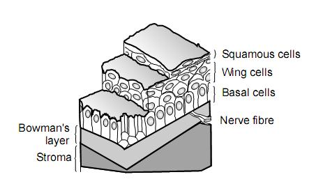

+ Màng Bowman
+ Một trong 5 lớp của giác mạc, đây là một lớp mỏng khoảng 8-14 micro mét, định vị giữa tầng biểu mô ở trước và nhu mô phía sau. Màng này không có cấu tạo tế bào, nó thay đổi theo lớp nhu mô nông được thấy chỉ ở động vật linh trưởng.

+ Đồng nghĩa: Bowman's layer, Lamina Elastic Anterior
